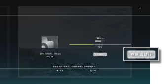
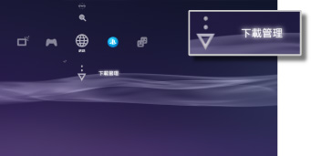

網路 > 如何底層下載
如何底層下載
所謂的底層下載，是指下載檔案較大的資料或複數資料時，能邊下載邊進行其他操作的機能。但唯有當下載中畫面已顯示［在底層下載］時始可利用此機能。

提示
- 底層下載可能因下載的內容和資料的數量而無法順利執行。
- 要使用遊戲資料、影像檔案等下載資料時可能會需要安裝。需要安裝的資料會於下載結束後，在各類別列以或
 顯示。
顯示。 - 當主機儲存空間上仍殘存尚未安裝的資料時，可能無法順利執行底層下載。
- 若於執行底層下載時關閉PS3™的電源，會自動保存下載狀況。且會於下次再度開啟PS3™電源並與網路連線時，自動繼續下載。
- 進行以下操作時，底層下載會暫時中斷。結束該操作後，即會自動繼續下載。
- -播放Blu-ray Disc或DVD時
- -使用內建網路連線機能之遊戲的網路機能時*
- -啟動PlayStation®2規格之軟件時
- -進行AV聊天時
- -進行系統更新時
- -正在調整
 （設定）之設定項目或其他操作時
（設定）之設定項目或其他操作時
*
直到離開遊戲都會持續暫停底層下載。
重要
- 部分PlayStation®2、PlayStation® 規格之軟件可能會於插入PS3™啟動時，出現與以往之PlayStation®2 或PlayStation® 主機不同的動作，或是無法正常啟動的現象。
- 此外，部份PS3™並不支援PlayStation®2規格光碟的播放。詳細請參閱[關於可播放的光碟種類]、各區域的官方網站或主機隨附的使用說明書。
下載管理
僅會於執行底層下載時顯示。開啟 （網路瀏覽介面）或
（網路瀏覽介面）或 （PlayStation®Store），可確認底層下載之資料的下載狀況，或中止下載。需進入
（PlayStation®Store），可確認底層下載之資料的下載狀況，或中止下載。需進入 （網路）後選擇
（網路）後選擇 （下載管理）。
（下載管理）。

確認下載狀況
選擇想確認下載狀況之資料的圖示後按下 按鈕，開啟選項選單並選擇［目前狀況］。
按鈕，開啟選項選單並選擇［目前狀況］。
中止下載
選擇想中止下載之資料的圖示後按下按鈕，開啟選項選單並選擇［中止下載］。中止下載後，即會自動從（下載管理）刪除。
暫停／重新下載
選擇想暫停下載的圖示後按下按鈕，開啟選項選單並選擇［暫停］。若想重新繼續下載，再度選擇該圖示後按下按鈕，開啟選項選單並選擇［繼續下載］。
提示
- 暫停下載後，圖示上會顯示
 。
。 - 載入多數檔案時若執行暫停，會自動開始下載下一個資料。
暫停所有的下載
任意選擇圖示後按下按鈕，開啟選項選單並選擇［全部暫停］。
重新繼續所有下載
任意選擇圖示後按下按鈕，開啟選項選單並選擇［全部繼續］。